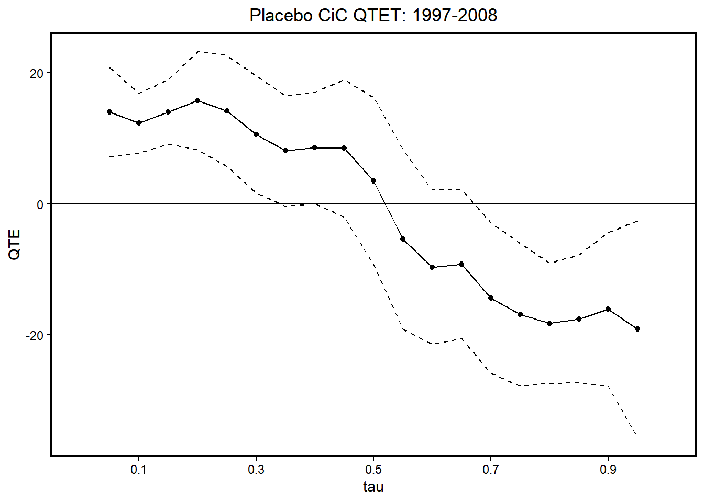
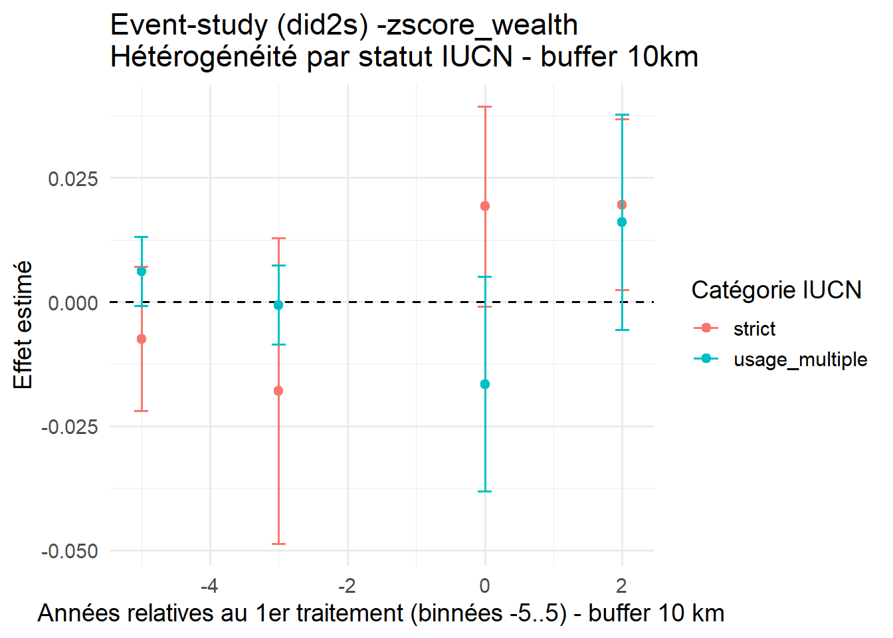

H1-overall effect on livelihoods: PA reduce the living standards of nearby households by restricting access to natural resources, with insufficient compensation or benefits.
H2-effect on inequalities: PA exacerbate economic inequalities, as better-off or better-connected individuals capture most of the benefits (tourism jobs, development projects).
H3-heterogeneity: Impacts vary across PA depending on governance, community participation, and management approaches.
9.2 Overall effect on livelihoods
9.2.1 2X2 DiD
In our PAP, we stated:
“The difference-in-difference principle is to compare the wealth index of control and treatment households before and after the establishment of PA. Our treatment began in 2011, so we use 2008 DHS data for the pre-treatment and 2021 DHS data for the post-treatment. This method relies on the parallel trends assumption, meaning that, in the absence of treatment, treatment and control groups would have experienced similar changes over time. To verify this assumption, we include two pre-treatment, points (DHS 1997 and DHS 2008 data) and assess trends between these years. […] The difference-in-difference method relies on the assumption of parallel trends. To validate this assumption, we will use as a reference, among the rural households surveyed in 1997, those living in an area located in or within of a PA created between 2008 and 2021 (placebo treatment group) and those matched to them using the method described above (placebo control group). We will graphically represent the evolution of the treatment and control groups in 1997, 2008 and 2021 for visual confirmation. To confirm the validity of the parallel trends assumption, we will conduct a placebo test 1997-2008 outcomes, as well as matching and control variables, while defining the treatment variable for post-2008 PA. If the estimated effect between 1997 and 2008 is null or statistically insignificant, this supports the parallel trends assumption.”
# Extraction compacte des deux effets DIDdid_row <-function(model, year_post, vc =~ hv001, term ="treat_post"){summary(model, vcov = vc) %>% broom::tidy() %>%filter(term ==!!term) %>%transmute(year = year_post, estimate, se = std.error)}did_df <-bind_rows(did_row(m_pre, 2008),did_row(m_main, 2021)) %>%mutate(period =factor(ifelse(year ==2008, "1997–2008", "2008–2021"),levels =c("1997–2008", "2008–2021")),lo = estimate -1.96*se,hi = estimate +1.96*se)ggplot(did_df, aes(x = period, y = estimate)) +geom_hline(yintercept =0, linetype ="dashed") +geom_errorbar(aes(ymin = lo, ymax = hi), width = .2) +geom_point(size =3) +labs(x =NULL, y ="Effet DID sur le centile de richesse (pondéré)",title ="DID 2×2 avec IC clusterisés (hv001)")
Le test placebo donne une estimation avec un coefficient faible (+1.8 centile) et non significatif: pas de différence détectée avant intervention dans les tendances du groupe traitement et du groupe contrôle. L’estimation du traitement préente une plus grande magnitude (-4.1 centiles), mais il reste non significatif. Les ménages vivant près des AP semblent connaître, un niveau de bien-être légèrement inférieur à celui des ménages contrôle, mais l’effet n’est pas significatif. A ce stade, l’analyse ne confirme pas l’hypothèse 1 (que les AP réduice le niveau de vie) : le sens de la relation est négatif, mais on ne peut pas rejeter l’hypothèse nulle. L’intervalle de confiance couvre encore largement 0, ce qui signifie qu’on a une précision insuffisante pour détecter un effet. L’effet est donc soit nul, soit inférieur à notre capacité de détection. Dans le PAP, on avait estimé que l’effet devrait être d’au moins 7.5 centiles pour pouvoir être détecté.
9.2.2 Staggered diff-in-diff
In our PAP, we stated:
“The MIS data can therefore be mobilized for this study. However, the periods covered by MIS only allow for comparisons beyond a simple “before” and “after” framework, which complicates the analysis and necessitates methods with limited methodological consensus. Since 2020, the state of the art in difference-in-difference methods has been challenged by the recognition that classical two-way fixed effects methods can yield spurious results when the effects of an intervention are heterogeneous and assessed over multiple periods. Since then, a dozen alternative approaches have been developed, but econometricians continue to debate their reliability (Roth et al. 2023). To avoid undermining the credibility of our results, we will initially limit ourselves to two study periods (DHS 2008 and 2021). Only if this approach lacks sufficient statistical power will we consider incorporating additional data. […] Additionally, if we incorporate data from MIS 1997, MIS 2011, and MIS 2013, we could apply an estimator suitable for staggered adoption and multiple study periods accounting for potential heterogeneous treatment effects (Borusyak, Jaravel, and Spiess 2024). This will only be performed if power is insufficient with two periods of data.”
Pour l’instant, je n’arrive pas à appliquer l’approche de Borusyak, Jaravel et Spiess avec des données en coupes répétées (pas du panel) avec le package R didimputation. En théorie cette méthode peut s’appliquer à des données “repeated cross sections” et il semblerait qu’un package STATA le fasse. Mais je n’ai pas STATA pour tester. On va donc appliquer la méthode de Gardner, qui en principe est très proche (avec des intervalles de confiance un peu plus large).
Nota bene : Afin de stabiliser les estimations de l’event-study, nous avons appliqué un binning des années relatives au traitement, regroupant toutes les observations au-delà de ±5 années dans des catégories communes. Ce choix est motivé par l’espacement irrégulier des enquêtes disponibles, qui implique que certaines valeurs de temps relatif sont représentées par très peu d’observations et produisent des coefficients instables. Comme le soulignent Borusyak, Jaravel et Spiess (2024, p. 22) : “In practice, it is common to bin distant leads and lags into a single category, both to improve statistical precision and to avoid presenting very noisy and uninformative coefficients.” Cette approche permet ainsi de réduire le bruit aux extrêmes et de se concentrer sur l’interprétation des dynamiques principales autour du traitement.
# Test joint de pré-tendances (tous les leads k < 0)# On construit un motif regex pour k = -5..-1 présents dans le modèleleads_present <- plot_did2s$k[plot_did2s$k <0]if(length(leads_present) >0){ keep_regex <-paste0("^rel_year_binned::(", paste(leads_present, collapse="|"), ")$")print(fixest::wald(did2s_es, keep = keep_regex))}
Wald test, H0: joint nullity of rel_year_binned::-5 and rel_year_binned::-3
stat = 0.830881, p-value = 0.435679, on 2 and 21,917 DoF, VCOV: Corrected Clustered (hv001).$stat
[1] 0.8308809
$p
[1] 0.435679
$df1
[1] 2
$df2
[1] 21917
$vcov
[1] "Corrected Clustered (hv001)"
L’estimation en “statique” donne un coefficient de ~1 centile (0.99), avec une erreur type de 2.1, ce qui indique un résultat non significatif. L’analyse en série temporelle avec binning ±5 ans. Etaye l’hypothèse de tendances parallèle. Les estimations en post semblent apparaître, mais ne semblent pas persister. Cela abonde dans le sens d’un impact faible et non-significatif. De possibles avancées à court-terme (~3 ans après la création de l’AP), mais pas soutenues dans le temps.
# Test joint de pré-tendances (tous les leads k < 0)# On construit un motif regex pour k = -5..-1 présents dans le modèleleads_present <- plot_did2s$k[plot_did2s$k <0]if(length(leads_present) >0){ keep_regex <-paste0("^rel_year_binned::(", paste(leads_present, collapse="|"), ")$")print(fixest::wald(did2s_es, keep = keep_regex))}
Wald test, H0: joint nullity of rel_year_binned::-5 and rel_year_binned::-3
stat = 2.88012, p-value = 0.056149, on 2 and 21,917 DoF, VCOV: Corrected Clustered (hv001).$stat
[1] 2.880117
$p
[1] 0.05614944
$df1
[1] 2
$df2
[1] 21917
$vcov
[1] "Corrected Clustered (hv001)"
tidy_es <- broom::tidy(did2s_es, conf.int =TRUE) %>%filter(grepl("^rel_year_binned::", term)) %>%mutate(year =as.numeric(sub("rel_year_binned::(-?\\d+).*", "\\1", term)),type =case_when(grepl("IUCN_group::usage_multiple", term) ~"diff_usage_multiple",TRUE~"strict" ) )# Effet pour les AP strictsstrict_effect <- tidy_es %>%filter(type =="strict") %>%mutate(group ="strict") %>%select(year, estimate, conf.low, conf.high, group)# Effet total pour AP à usage multipleusage_effect <- tidy_es %>%filter(type =="diff_usage_multiple") %>%rename(estimate_diff = estimate,conf.low_diff = conf.low,conf.high_diff = conf.high) %>%left_join(strict_effect, by ="year") %>%mutate(estimate = estimate + estimate_diff,conf.low = conf.low + conf.low_diff,conf.high = conf.high + conf.high_diff,group ="usage_multiple" ) %>%select(year, estimate, conf.low, conf.high, group)# Plot ES did2splot_did2s <-bind_rows(strict_effect, usage_effect)ggplot(plot_did2s, aes(x = year, y = estimate, color = group)) +geom_hline(yintercept =0, linetype ="dashed") +geom_point() +geom_errorbar(aes(ymin = conf.low, ymax = conf.high), width = .2) +labs(x ="Années relatives au 1er traitement (binnées -5..5)",y ="Effet estimé",title ="Event-study (did2s) - hétérogénéité par statut IUCN",color ="Catégorie IUCN") +theme_minimal()

Code
# Test joint de pré-tendances (tous les leads k < 0)# On construit un motif regex pour k = -5..-1 présents dans le modèleleads_present <- plot_did2s$k[plot_did2s$k <0]if(length(leads_present) >0){ keep_regex <-paste0("^rel_year_binned::(", paste(leads_present, collapse="|"), ")$")print(fixest::wald(did2s_es, keep = keep_regex))}
ggqte(cic_pre) +labs(x ="Quantiles", y ="QTET",title ="Placebo CiC QTET: 1997-2008")

Pour l’estimation principale (2008-2021), l’ATE est fortement négatif et très significatif (-17.9 centiles!). Les effets négatifs se retrouvent sur l’ensemble de la distribution, mais sont particulièrement marqués pour les centiles les plus faibles. Cela conforterait fortement l’hypothèse 2 (les AP renforcent les inégalités), mais c’est surprenant que ce soit à ce point marqué sur l’ensemble de la distribution alors que le DiD sur le wealth centile n’était pas significatif (Hypothèse 1).
Pour le test placebo, la courbe n’est pas exactement plate : différence significative sur les bas revenus (supérieurs chez les traitements) et inférieure sur les bas revenus.